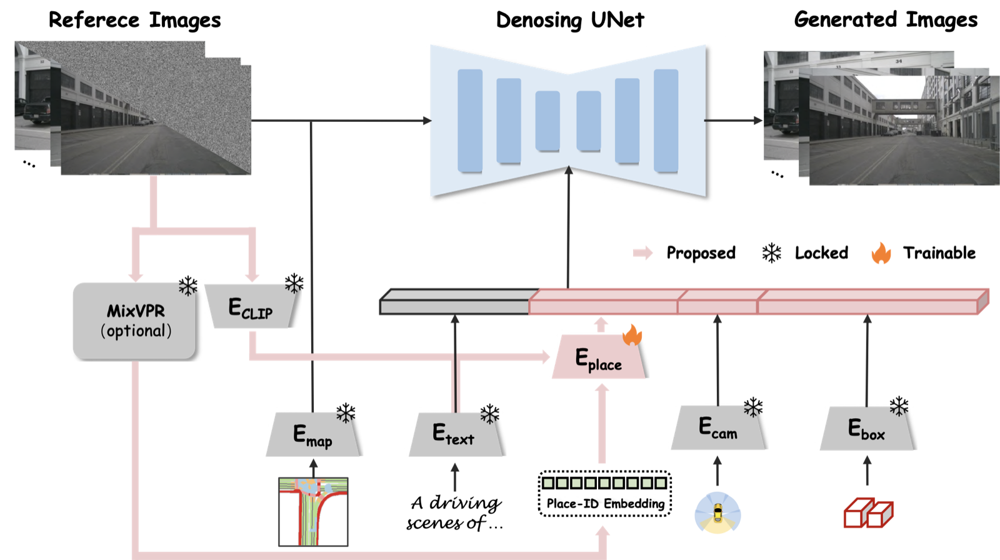
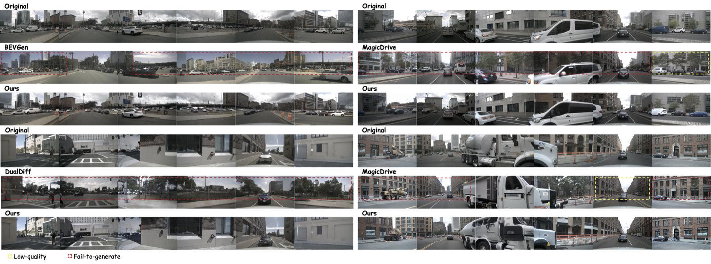
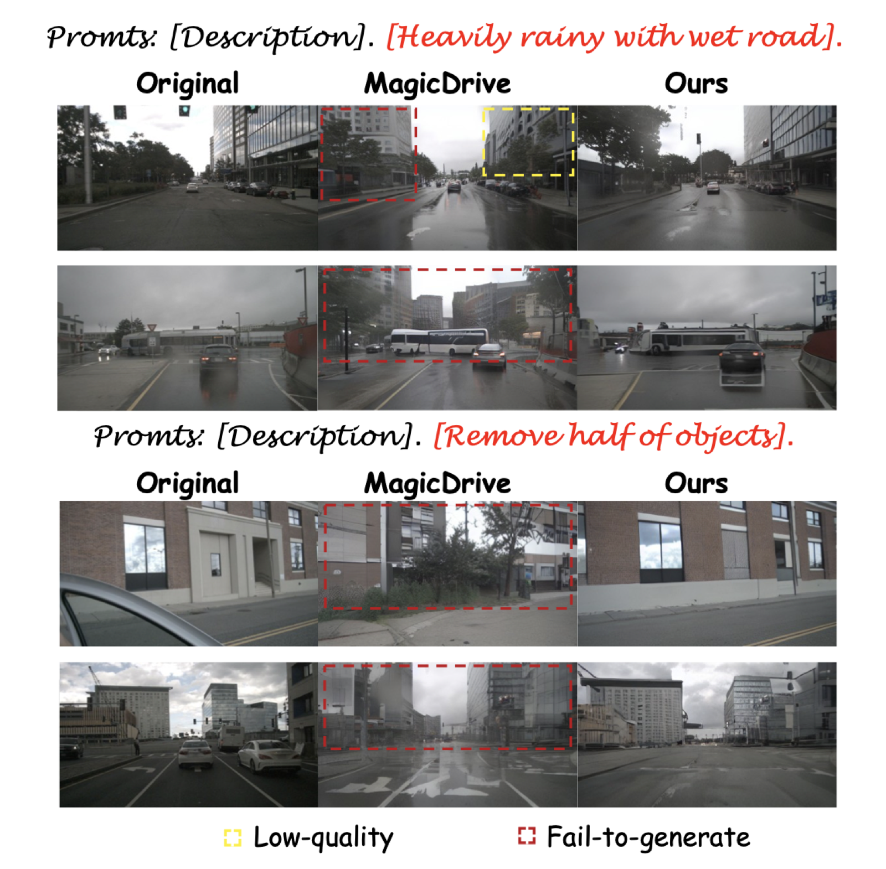
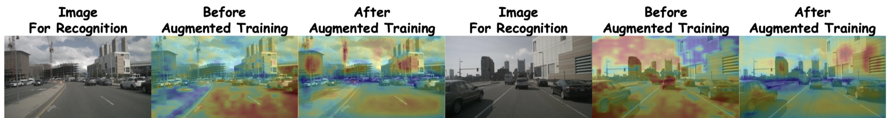

On generated validation scenes, beating MagicDrive by 21.7 points.
Abstract
Generative models have advanced significantly in realistic image synthesis, with diffusion models excelling in quality and stability. Recent multi-view diffusion models improve 3D-aware street view generation, but they struggle to produce place-aware and background-consistent urban scenes from text, BEV maps, and object bounding boxes. This limits their effectiveness in generating realistic samples for place recognition tasks.
DiffPlace introduces a place-ID controller that maps place embeddings into a fixed CLIP space through linear projection, a perceiver transformer, and contrastive learning. This lets the model synthesize scenes with consistent background buildings while flexibly changing foreground objects and weather.
Experiments show that DiffPlace improves both generation quality and augmented training support for visual place recognition, making scene-level controllable synthesis more useful for autonomous driving.
Method
Place-ID controller inside a multi-view diffusion pipeline

What changes relative to prior work
- Uses a dedicated place-ID encoder instead of overloading text prompts.
- Aligns place embeddings with CLIP space for stable conditioning.
- Preserves background identity while still supporting object and weather edits.
- Targets generation that is useful for downstream place recognition training.
Results
Better place controllability, stronger retrieval-oriented generation
Best place recognition consistency among compared generation methods.
Competitive realism while improving background-level controllability.
Augmented training improvement on Pitts30k-test over no synthetic data.

Validation performance on generated images
| Method | FID | AR@1 | AR@5 |
|---|---|---|---|
| BEVGen | 25.6 | 31.2 | 60.8 |
| BEVControl | 24.8 | - | - |
| MagicDrive | 16.2 | 35.9 | 64.1 |
| DualDiff | 11.0 | 48.7 | 68.9 |
| DiffPlace | 13.4 | 57.6 | 75.4 |
Augmented training support on Pitts30k-test
| Training data | MixVPR AR@1 | MixVPR AR@5 | CricaVPR AR@1 | CricaVPR AR@5 |
|---|---|---|---|---|
| No synthetic data | 83.5 | 90.3 | 90.9 | 96.0 |
| MagicDrive | 84.2 | 91.1 | 90.3 | 95.7 |
| DiffPlace | 89.7 | 95.2 | 92.9 | 96.8 |
Interpretability
Generated data shifts attention toward background landmarks


Citation
BibTeX
Reference
Li, J., Li, Z., Li, S., Yu, Z., Wang, B., and Liu, H. DiffPlace: Street View Generation via Place-Controllable Diffusion Model Enhancing Place Recognition. arXiv:2602.11875, 2026.
BibTeX
@article{li2026diffplace,
title={DiffPlace: Street View Generation via Place-Controllable Diffusion Model Enhancing Place Recognition},
author={Li, Ji and Li, Zhiwei and Li, Shihao and Yu, Zhenjiang and Wang, Boyang and Liu, Haiou},
journal={arXiv preprint arXiv:2602.11875},
year={2026},
url={https://arxiv.org/abs/2602.11875}
}